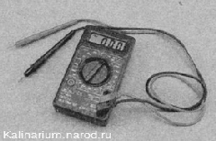
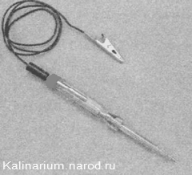

Проверка электрооборудованияПри поиске причин неисправности какого-либо из приборов электрооборудования прежде убедитесь в исправности его предохранителя и надежном контакте в разъемах его цепи. Окисленные выводы соединительных колодок - частая причина неработоспособности электрооборудования. При необходимости зачистите выводы. Особенно тщательно проверяйте места соединения отрицательных выводов электрооборудования с массой автомобиля. Нередко именно отсутствие надежного контакта с «массой» приводит к нарушениям в работе электрооборудования. Д.ля поиска неисправностей электрооборудования следует иметь тестер — это комбинированный электроизмерительный прибор. Такие устройства бывают нескольких типов: аналоговые, со стрелочным индикатором; цифровые, с жидкокристаллическим дисплеем; универсальные — имеющие как стрелочный индикатор, так и жидкокристаллический дисплей. При ремонте автомобиля удобнее использовать цифровой прибор (или, как его еще называют, мультиметр). Он компактный и показывает точные значения при любом положении в пространстве. Для проверки обесточенных цепей мультиметр переводят в режим омметра. При измерении очень низкого сопротивления (в пределах нескольких Ом), необходимо вводить поправку — из полученного значения вычесть внутреннее сопротивление мультиметра, электрическое сопротивление его проводов и щупов (обычно 0,06-0,08 Ом). Чтобы точно определить эту поправку, следует переключить прибор в режим измерения низких величин сопротивлений (до 200 Ом), и замкнуть концы его щупов. Для проверки цепей под напряжением мультиметр переключают в режим вольтметра (с пределом измерения до 20 В). Мультиметр позволяет измерить ток, потребляемый электрооборудованием автомобиля (до 10 А). Если необходимо определить только наличие или отсутствие напряжения на участке цепи, без измерения величины, то удобнее использовать специальный световой индикатор на 12 В... ...или контрольную лампу, которую можно изготовить самостоятельно (из автомобильной лампы мощностью не более 4 Вт, припаяв к ней два провода длиной не менее 50 см). Замечание Порядок проверки технического состояния электрооборудования автомобиля изложен в соответствующих разделах главы. |